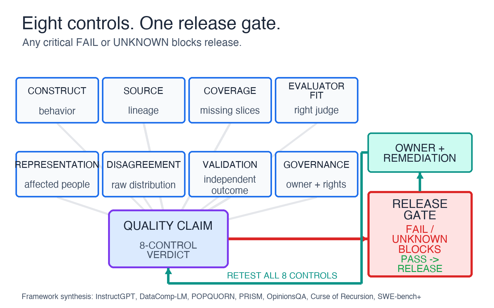
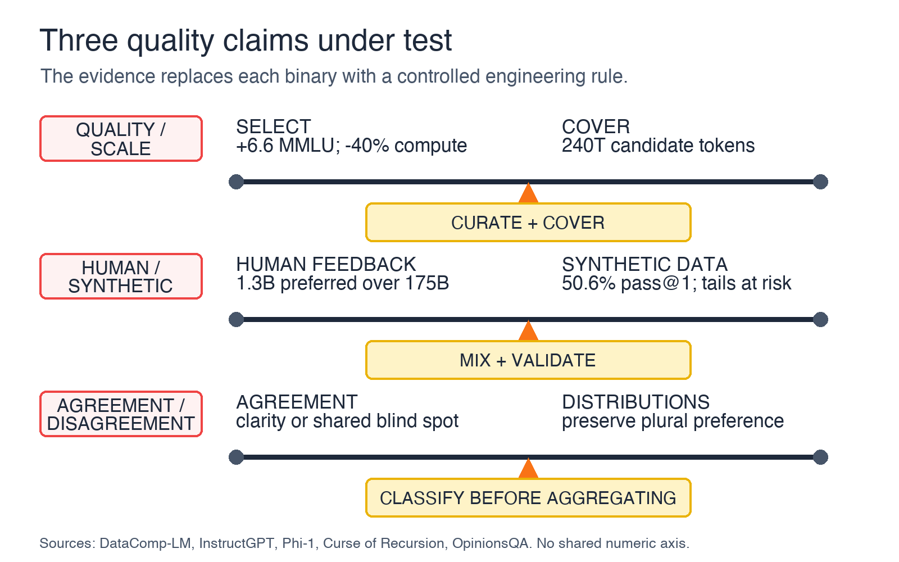
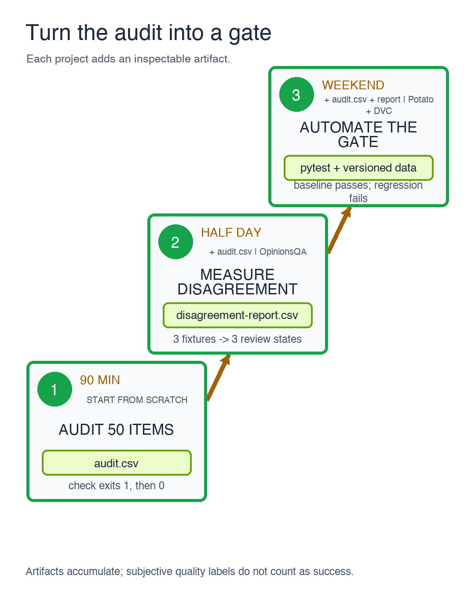

In one coding-agent benchmark, making the test set better made the reported result look much worse.
The SWE-bench+ audit examined 251 test-passing SWE-Agent with GPT-4 patches on SWE-bench Full. Among those patches, 32.67 percent showed solution leakage and 31.08 percent passed because the tests were too weak. The paper agrees that the original 12.47 percent resolution rate fell sharply after filtering, but not on the endpoint: its abstract reports 3.97 percent while Section 2.2 reports 5.49 percent.
The agent had not suddenly regressed. The measurement had become more honest.
Quality is a system, not a label.
This article proposes eight controls for auditing that system: construct, source, coverage, evaluator fit, representation, disagreement, validation, and governance. You can apply them to 50 items, record one blocking threshold, and make the first failed or unknown control actionable.
That result is a useful warning for anyone buying, building, or approving AI data. “High quality” often arrives as a label backed by an attractive proxy: human-made, expert-reviewed, representative, high-agreement, heavily filtered, or synthetic at scale. Every one of those properties can be useful. None proves that the data is fit for the decision you plan to make with it.
I started digging into this after watching Enzo Blindow, CEO of Prolific, argue in AI Can’t Replace Human Judgment that the AI industry is moving from a volume problem to a quality problem. The episode gets an important point right: human judgment can change model behavior in ways that raw scale cannot. But two stronger claims, that volume is solved and synthetic data has a ceiling, do not survive as universal rules.
The evidence points to a more practical operating rule. Within this audit, each
control needs evidence, a metric, a failure threshold, an owner, a remediation
path, and a pass, fail, or unknown status. If one critical control fails, a
reassuring average should not let the data through.
A quality claim is a decision in disguise
“This is a high-quality dataset” is incomplete. High quality for what decision?
A preference dataset used to tune a customer-support model has a different job from a red-team set used to find medical-safety failures. A benchmark used to compare coding agents has a different job from a training corpus used to teach Python syntax. The same example can be useful for one decision and invalid for another.
The category labels do not close that gap:
- Human-labeled tells you who produced a judgment, not whether the task measured the intended behavior
- Expert-reviewed tells you about credentials, not whether those credentials fit the judgment being requested
- Representative tells you about a sampling target, not whether aggregation erased stable minority preferences
- High agreement tells you that a cohort answered similarly, not whether they shared the same blind spot
- Synthetic tells you how an example was generated, not whether it is correct, diverse, independent, or useful
A stronger claim has six parts:
Dataset v3 is fit for release-gate R7 for English support conversations from the US and India, based on the eight-control audit dated 2026-07-16, with two known coverage gaps, one blocking threshold, and one accountable owner.
That sentence is less marketable. It is also testable.
The eight-control audit

The controls are not stages to complete once. They interact. Changing a prompt can change the construct. Adding a country can change representation and disagreement. Using a model to generate more examples can change provenance and coverage. Updating a benchmark test can change every historical comparison.
1. Construct: define the behavior before the label
The construct is the thing you intend to measure or improve. “Helpfulness” is not a construct until a team specifies observable behavior, context, and exclusions. Does helpful mean correct, complete, concise, empathetic, policy-compliant, or successful at resolving the user’s task? Those objectives can conflict.
Clear instructions are necessary, but clarity alone does not establish validity. The human-feedback summarization study is instructive because it did not assume ROUGE was the target. The researchers collected direct human comparisons and optimized for preferences on the studied summarization tasks. Their preference-trained models outperformed reference summaries and larger supervised models under that evaluation. The result is bounded, but it illustrates a reusable audit question: validate the proxy against the behavior you actually care about.
Audit questions:
- What observable decision will this label change?
- Which plausible but wrong proxies could annotators optimize?
- Which examples separate the intended construct from those proxies?
- What independent outcome would falsify the construct definition?
2. Source: record where every example came from
Source control covers origin, transformations, model generation, human edits, deduplication, and links between training and evaluation data. “Public web” or “human reviewed” is not enough lineage to reproduce a decision.
The risk is not limited to accidental duplication. The Curse of Recursion shows a specific failure mode when models train recursively on generated data: the tails of the original distribution can progressively disappear. The paper does not prove that every generated example causes collapse. It shows why teams need to record generation depth and preserve independently observed data.
SWE-bench+ exposes the evaluation version of the same problem. If a solution or its logic leaks into the task context, the benchmark no longer measures the intended capability. Provenance is part of the score.
Audit questions:
- Can each item be traced to raw input, transformations, generators, and reviewers?
- How many generation or distillation steps separate it from observed data?
- What prevents train-test, solution, or evaluator leakage?
- Can the exact dataset version be reconstructed?
3. Coverage: measure what is missing
Filtering can improve the return on compute. It cannot manufacture coverage that was never present in the candidate pool.
DataComp-LM evaluated data-selection recipes from a 240-trillion-token pool. Its best recipe reported a 6.6-point MMLU gain over a MAP-Neo baseline for a 7B model trained on 2.6T tokens while using 40 percent less compute. That is strong evidence that selection matters. It is not evidence that volume is solved. The recipe’s opportunity came from an enormous pool.
The tail remains expensive. A study of 34 multimodal models across five pretraining datasets found that downstream performance followed a sample-inefficient log-linear trend and remained poor on long-tail concepts. Because the study is multimodal, I would not copy its exact curve into a text-only capacity plan. I would copy the audit question: which rare concepts, languages, tasks, and harms are missing from the data I can see?
Audit questions:
- Which deployment slices are absent or too sparse to estimate failure?
- Does filtering improve average performance by removing difficult tail cases?
- Are rare but high-cost failures sampled by consequence rather than frequency?
- What changed between the candidate pool and the released set?
4. Evaluator fit: match the judge to the judgment
“Expert” is a relationship between a person and a task. It is not a permanent quality tier.
A database engineer may be the right evaluator for SQL correctness. A person who uses a screen reader may be the right evaluator for an accessibility workflow. A clinician may detect a medical error, while a patient may better judge whether an explanation is understandable or dismissive. For preference tasks, lived experience can be relevant evidence rather than a weaker substitute for credentials.
The POPQUORN dataset collected 45,000 annotations from 1,484 annotators and found meaningful effects from annotator background across question answering, offensiveness, rewriting, and politeness. That does not make demographics a complete model of expertise. It shows that the evaluator’s background can affect the labels collected.
Audit questions:
- Which knowledge or lived experience is required for this specific judgment?
- Which cohort should be excluded, and why?
- Do instructions ask evaluators to judge beyond their competence?
- Are evaluator errors measured separately from genuine preference differences?
5. Representation: compare the panel with deployment
Representation is not a generic diversity percentage. It is a comparison between the evaluator population and the people affected by the system.
PRISM links 1,500 participants from 75 countries to feedback from 8,011 live conversations with 21 language models. Its value is not only geographic breadth. The dataset preserves participant context alongside preferences, allowing researchers to ask who preferred which behavior.
That still does not guarantee national representativeness, and demographic fields do not capture every relevant viewpoint. A team should report both the target population and the mismatch it could measure.
Audit questions:
- What is the deployment population for this decision?
- Which groups are over-sampled, under-sampled, or absent?
- Are sample sizes large enough to report uncertainty per important subgroup?
- Which relevant experiences are not represented by available demographic fields?
6. Disagreement: classify it before aggregating it
Many pipelines treat disagreement as a defect to eliminate. Sometimes it is. Annotators can misunderstand instructions or make errors. But disagreement can also reveal ambiguity, plural preference, subgroup variation, or concept drift.
OpinionsQA uses 1,498 questions based on Pew American Trends Panel surveys and compares language-model responses with human opinion distributions. The important word is distributions. A majority label would discard much of the signal the benchmark was designed to inspect.
Before majority vote or adjudication, assign disagreement to one of four buckets:
- Likely evaluator error
- Ambiguous instruction or example
- Stable plural preference
- Time, region, or cohort drift
Then choose an action. Retrain evaluators for the first. Rewrite the task for the second. Preserve a distribution or conditional policy for the third. Version the data and investigate the fourth.
Audit questions:
- What does the label distribution look like before aggregation?
- Does disagreement cluster by example, evaluator, cohort, or time?
- Which aggregation rule matches the deployment decision?
- Which minority judgments represent high-cost failures that majority vote hides?
7. Validation: prove that labels predict an independent outcome
Validation is where a quality claim earns the right to influence a release. Gold items, attention checks, and agreement metrics test useful properties. They do not prove that the resulting labels improve model behavior.
The InstructGPT study provides a memorable bounded example. On its prompt distribution, human evaluators preferred outputs from a 1.3B-parameter aligned model over outputs from 175B GPT-3. The result shows that curated feedback can have substantial impact in post-training. It does not show that 1.3B parameters and a small feedback set replace broad pretraining.
Synthetic-data interventions make the same point from another direction. In one diversified synthetic-data experiment, an oracle label-replacement study found that correcting misaligned labels increased model accuracy by 14.4 percent in absolute terms, while filtering out-of-scope examples did not improve accuracy. “Human in the loop” is too vague. The intervention and downstream measure matter.
Audit questions:
- Does the data improve an independent preference, capability, or safety measure?
- Is the validation set independent of the generator and primary evaluator cohort?
- What threshold blocks release, and was it defined before results were viewed?
- Which intervention changed the outcome, and which did not?
8. Governance: make the claim reproducible and challengeable
Governance turns a one-time study into an operating system. At minimum, record the data version, decision owner, rights and consent basis, change history, known gaps, failure thresholds, escalation path, and retirement trigger.
Tools can make those controls inspectable. Potato is a free, self-hosted annotation platform that supports training phases, gold items, agreement metrics, adjudication, behavioral tracking, agent-trace review, and continuous evaluation. Those features do not decide whether a study is valid. They make it possible to implement and audit the policy a team chooses.
Governance depth should scale with consequence. A two-hour prompt experiment and a medical-safety release should not carry the same review burden. Both still need enough lineage to reproduce the result.
Audit questions:
- Who can approve, challenge, and retire this data version?
- What rights cover collection, transformation, model training, and derivative data?
- Which changes force revalidation?
- Can a reviewer reproduce the release decision from stored evidence?
Three seductive shortcuts that fail

Shortcut 1: “Quality replaces quantity”
The evidence supports a narrower claim: curation changes the return on scale. DataComp-LM’s 6.6-point MMLU gain and 40 percent compute reduction make selection impossible to dismiss. Its 240-trillion-token candidate pool makes scale impossible to dismiss too.
The engineering rule is CURATE + COVER: publish the selection recipe and the
remaining coverage gaps. A smaller final set is not automatically a better set if
filtering removed rare, difficult, or costly cases.
Shortcut 2: “Humans beat synthetic data”
Humans can supply judgment that a generator cannot independently validate. But synthetic data can be useful inside a controlled pipeline.
Phi-1 trained a 1.3B-parameter code model using 6B filtered web tokens plus 1B GPT-3.5-generated textbook and exercise tokens. It reported 50.6 percent pass@1 on HumanEval and 55.5 percent on MBPP. Those results do not establish a universal synthetic-data recipe. They counter the claim that synthetic data cannot add substantial value in a controlled mixed-data pipeline.
The recursion research supplies the opposite boundary: generated data can erase
tails when model outputs recursively replace observed data. The engineering rule
is MIX + VALIDATE: record provenance and generation depth, preserve independent
human-observed data, and test outcomes outside the generator loop.
Shortcut 3: “Agreement proves correctness”
High agreement can indicate a clear task. It can also indicate trivial examples, a narrow cohort, shared training, or a shared blind spot. Low agreement can signal bad instructions, but it can also reveal real plural preferences.
The engineering rule is CLASSIFY BEFORE AGGREGATING: inspect distributions and
clusters before choosing majority vote, adjudication, conditional policies, or
multiple acceptable labels.
Run the audit on 50 items
Do not begin with a program-wide quality score. Begin with 50 items and one release decision.
- Select 50 recent or decision-critical examples. Include failures and edge cases; do not sample only convenient passes.
- Write the exact decision each example informs. If that sentence is unclear,
mark the construct
unknown. - Create one row per item-control pair with these fields:
item_id,control, claim, evidence, metric, threshold, criticality, owner, remediation, and status. - Define critical controls before inspecting results. For a public benchmark, leakage and test validity may be critical. For a preference set, evaluator fit, representation, and disagreement handling may be critical.
- Use only
pass,fail, orunknown. Missing evidence is not a pass. - Block the release when a critical control is
failorunknown. Do not average either status away. - Commit the audit with the dataset version. Rerun it when the source, instruction, cohort, model, aggregation rule, or benchmark changes.
The audit rubric
Use one row per item-control pair. Every row carries the same fields, including a
metric and one of three statuses: pass, fail, or unknown.
Construct rubric
- Claim: Labels measure the intended behavior
- Evidence: Decision definition plus discriminating examples
- Metric: Share of pilot items with incompatible interpretations
- Example threshold: Fail above 10 percent
- Criticality: Set before inspection from the cost of construct error
- Owner: Task owner
- First remediation: Rewrite the construct and rerun the pilot
- Status:
pass,fail, orunknown
Source rubric
- Claim: Every item has reproducible lineage
- Evidence: Origin, transforms, generator, edits, and split links
- Metric: Critical items with unknown origin or confirmed leakage
- Example threshold: Fail above zero
- Criticality: Set before inspection from leakage and provenance risk
- Owner: Data engineer
- First remediation: Quarantine affected items and rebuild lineage
- Status:
pass,fail, orunknown
Coverage rubric
- Claim: Important deployment slices are measurable
- Evidence: Slice inventory, counts, and failure cost
- Metric: Item count per predeclared critical slice
- Example threshold: Fail below the predeclared minimum
- Criticality: Set before inspection from slice failure cost
- Owner: Data lead
- First remediation: Target collection or narrow the quality claim
- Status:
pass,fail, orunknown
Evaluator fit rubric
- Claim: Evaluators match the requested judgment
- Evidence: Cohort rationale and qualification evidence
- Metric: Judgments outside the documented competence boundary
- Example threshold: Fail above zero for critical judgments
- Criticality: Set before inspection from evaluator mismatch risk
- Owner: Study owner
- First remediation: Recruit a matched cohort or split the task
- Status:
pass,fail, orunknown
Representation rubric
- Claim: The panel matches affected populations well enough for the decision
- Evidence: Target-versus-sample table with uncertainty
- Metric: Sample size and uncertainty per critical population
- Example threshold: Fail when a critical population is absent or inestimable
- Criticality: Set before inspection from impact on affected populations
- Owner: Data lead
- First remediation: Rebalance the panel or narrow deployment scope
- Status:
pass,fail, orunknown
Disagreement rubric
- Claim: Aggregation preserves meaningful signal
- Evidence: Raw distributions and cluster analysis
- Metric: Stable subgroup splits collapsed without an explicit policy
- Example threshold: Fail above zero
- Criticality: Set before inspection from the cost of erasing plural preference
- Owner: Research lead
- First remediation: Preserve the distribution or define a conditional rule
- Status:
pass,fail, orunknown
Validation rubric
- Claim: Labels predict an independent outcome
- Evidence: Holdout preference, capability, or safety measure
- Metric: Change in the predeclared aggregate and critical-slice outcomes
- Example threshold: Fail when the target misses threshold or a critical slice regresses
- Criticality: Set before inspection from release consequence
- Owner: Evaluation lead
- First remediation: Reject the change and inspect the failed control
- Status:
pass,fail, orunknown
Governance rubric
- Claim: The release decision is reproducible and challengeable
- Evidence: Version, owner, rights, changes, escalation, and retirement record
- Metric: Required decision-record fields missing
- Example threshold: Fail above zero
- Criticality: Set before inspection from rights, accountability, and audit risk
- Owner: Accountable lead
- First remediation: Stop release until the record is complete
- Status:
pass,fail, orunknown
The example thresholds are starting points, not a standard. Change them before the audit based on consequence and sample size. Do not tune them after seeing results.
Build it yourself: 3 projects to try this week

Project 1: Audit a 50-item benchmark slice (Beginner)
Goal: Build a versioned CSV audit that exposes the first failed or unknown control in a benchmark or preference dataset.
Prerequisites: Python 3.11 or later, a Git repository, and 50 non-sensitive items from a dataset you are allowed to inspect.
Steps:
- Create
audit.csvwith one row per item-control pair and columns foritem_id, control, claim, evidence link, metric, threshold, criticality, owner, remediation, and status. - Define one release decision and mark its critical controls in
audit-policy.yaml. - Score each item
pass,fail, orunknown; preserve raw notes instead of converting uncertainty into a numeric average. - Write a small Python check that exits nonzero when a critical control contains
failorunknown. - Commit the CSV, policy, script, and generated summary together.
Success signal: python check_audit.py audit.csv audit-policy.yaml exits with code
1 for an intentionally failed critical control and code 0 after remediation.
Time: 90 minutes.
Stretch goal: Compare your fields with the reproducible evaluation and dataset structure in the SWE-bench repository, then add a leakage-specific check for your domain.
Start from: No template is required. Begin with an empty repository and the two files above; use SWE-bench only as an inspectable benchmark-harness reference.
Project 2: Measure disagreement before majority vote (Intermediate)
Goal: Build a subgroup and disagreement report that distinguishes ambiguous items from stable plural preferences.
Prerequisites: Project 1, Python with pandas or Polars, at least three judgments per item, and one evaluator attribute that is relevant and lawful to analyze.
Steps:
- Preserve one row per judgment rather than one aggregated row per item.
- Compute the label distribution, entropy, and agreement statistic per item.
- Compare distributions across the predeclared evaluator groups and report sample sizes alongside every difference.
- Assign high-disagreement items to error, ambiguity, plural preference, or drift;
allow
unclassifiedrather than forcing an answer. - Export
disagreement-report.csvand a machine-readable list of items whose aggregation policy must be reviewed.
Success signal: pytest exits 0 only when a unanimous fixture maps to agreement,
a random fixture maps to unstable, and a stable group split maps to
plural-preference.
Time: Half a day.
Stretch goal: Adapt the representativeness notebook in the OpinionsQA repository to compare your model or label distributions with a declared target distribution.
Start from: The OpinionsQA repository provides 1,498 questions, human response distributions, precomputed model runs, and notebooks for representativeness, steerability, consistency, and refusals.
Project 3: Build a continuous human-feedback regression gate (Advanced)
Goal: Build a local pipeline that samples changed outputs, collects structured human judgments, versions the resulting data, and fails a test when a critical slice regresses.
Prerequisites: Projects 1 and 2, Docker or a local Python environment, pytest, and non-sensitive model outputs or agent traces.
Steps:
- Configure Potato for pairwise or per-step evaluation with training items, raw judgment export, and adjudication.
- Define a sampling rule that always includes changed outputs, prior failures, and one rare but high-cost slice.
- Export judgments without discarding evaluator or item identifiers needed for approved subgroup and disagreement analysis.
- Version data, parameters, and metrics with DVC, keeping sensitive payloads in an appropriate local or controlled remote store.
- Add a pytest regression check for one aggregate metric and at least one critical slice. Fail on missing evidence as well as measured regression.
- Run the gate against a deliberately degraded output set and store the failed audit artifact with the pipeline version.
Success signal: The CI or local test passes on the baseline data, fails on the deliberately degraded critical slice, and reproduces both results from versioned inputs and parameters.
Time: A weekend.
Stretch goal: Add boundary probes that make small counterfactual edits and flag evaluators whose labels change on meaning-preserving paraphrases.
Start from: Potato is a free, self-hosted annotation platform with agent-trace, agreement, adjudication, behavioral, and continuous-evaluation support. DVC versions data, pipelines, parameters, and metrics locally or with a controlled remote.
Replace the label with a claim
Human judgment matters. The 1.3B-versus-175B InstructGPT preference result makes that difficult to deny. Synthetic data can matter too. Phi-1 makes a universal ceiling difficult to defend. Scale still matters for candidate diversity and tail coverage. DataComp-LM and long-tail research make “volume is solved” too broad.
The useful question is not which category wins. It is whether the data system can defend the decision placed on top of it.
Start with Project 1. Audit 50 items, predeclare one blocking threshold, and record the first control that fails or remains unknown. That result is more actionable than another dataset described only as “high quality.”